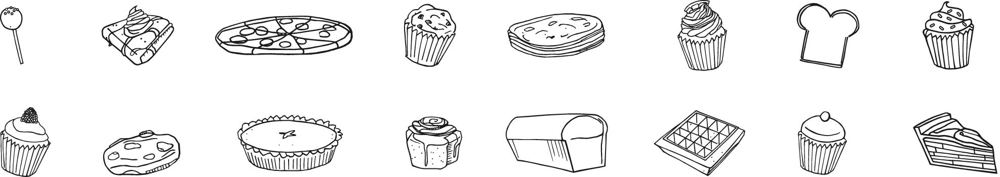

Role
Led brand redesign, packaging, and illustrations. Assisted in user testing.
Intent
Some Call out here
Before joining the team, Marie's had an established identity and was frequently selling out in stores. With a faithful customer and growing consumer base, the goal was to push the brand forward, increase brand recognition, and elevate the product.
Branding Update
Look and Feel
Marie’s Gluten-Free takes inspiration not only from Dauphine of France, but from the 18th-century, a time of both extravagance and change. Pulling from this time period, I drafted up a moodboard bridging this time period with today.

Logo
The brand attributes included:_______. To accomplish this I pulled in strong geometric shapes to update the silhouette and a serif type that brought structure and a classic feel.

Packaging
Marie’s delights customers when they learn just how friendly the baked goods and mixes are to their dietary restrictions. Despite this, however, the founder frequently received questions around the allergy-friendliness of her products. To provide assurance and continue to delight the customer, the packaging needed to be clear, but also communicate the brand attributes.
To contrast and compliment the logo, and allow for flexibility and independence from photography, illustrations were integrated into the system. A subtle stripe pattern was incorporated as well, to relate back to the business's inspiration.
Testing
To test and validate the logo and layout, we surveyed a group of 100 potential customers with celiac disease in the midwest. Four different designs were tested, including the original to gauge audience preferences. We found that buyers' ages impact their design preferences, and that our hunch, to compete in the current market the packaging needed a new look, was validated.